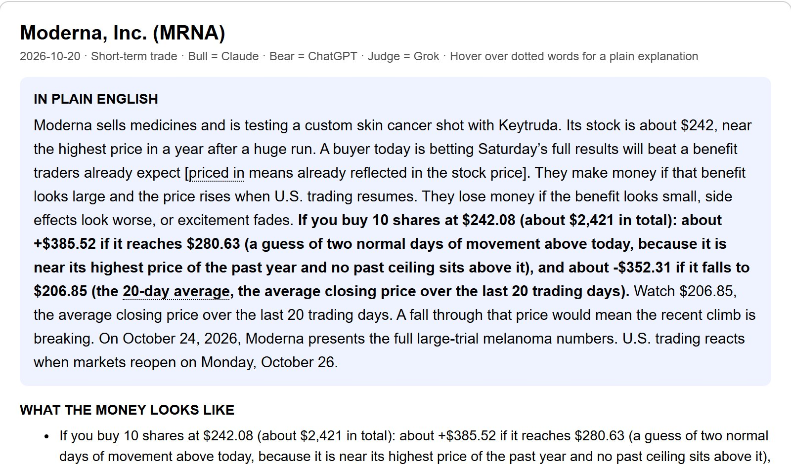

Stock Debate
An AI research tool where Grok researches a stock, Claude and ChatGPT argue bull vs bear, and Grok judges the evidence.
- Claude (bull)
The drop looks like a pullback [a small move back after a rise], and price still sits just above a tested floor.
- ChatGPT (bear)
The short chart is weak, and a break of nearby support is a small move away.
- Claude (bull)
Fresh demand headlines still show buyers wanting Nvidia chips and new products.
- ChatGPT (bear)
Rate news and peer reports can hit the group again before Nvidia reports.
- Claude (bull)
The business is very profitable, and the stock fell less than other chip names.
- ChatGPT (bear)
Headline orders are not near-term cash, and past report days often fell.
- Grok (judge)
Mixed: the stock is in a pullback [a short drop after a rise] under short averages, and near events can push it either way.



How it works
What I built
Ever since I started trading, I've had an issue with researching stocks. I didn't have the patience to read everything or analyze the same graph for 20 minutes for a move that wouldn't even hit. So instead I would watch TikTok or Instagram, listening to what other people said without checking the evidence myself.
So I decided to make a tool that does the research with you and teaches you along the way. It gathers all the relevant info on a stock based on whether you're trading short-term or holding long-term: earnings, deals, reports, lawsuits, X posts and everything else that matters. Then Claude and ChatGPT debate the bull and bear case. I picked two AIs and a judge so they can check each other's mistakes and argue about the information, which makes it more accurate. When I started, I used only one AI, and aside from the information not being accurate, some of it was made up. It claimed Palantir was worth $3 billion, when it was actually worth over $400 billion, and named deals with other companies that it couldn't back up with any source.
At the end it summarizes the points, what you're betting on, and what would prove you wrong, so you can make a smarter trade while learning why you're placing it. It also shows you a chart of the stock with support, resistance and more, so you learn how to analyze a graph yourself.
I came up with the idea, and Claude did most of the coding. I tested the reports to make sure the information was accurate. When one AI kept winning every debate, I realized the results weren't always based on the best evidence, so I changed the judge to focus on the evidence instead of who made the better argument. I also kept improving the summaries because they were too vague, and I wanted people who don't know much about stocks to understand them better. I added a chart and kept making changes to improve the tool.
Challenges
Throughout this project there were many small challenges, like delayed data and long waiting times for a result. But I think the biggest one was that the winner depended on the AI, not the stock. Grok would judge who argued better, who had better research or better counter-arguments, but not which side the evidence actually supported. I didn't notice much of it at the start, but then I realized ChatGPT was always winning. So I ran a few tests and switched which AI argued each side, and ChatGPT won 5 out of 5 times no matter which side it was on. I upgraded Claude to a stronger model and changed the judge so it rates the evidence instead of who argued better. When I swapped the sides again, the results came out with the same main points no matter which AI argued.
At first, the tool also took a really long time to run, about 14 minutes for one stock. I timed each step and found that most of it was Grok thinking for too long while judging. After I turned its thinking setting down, the judging went from about 10 minutes to under a minute, and a full run dropped from 14 minutes to about 4. The reports were just as good.
What I learned
This project surprisingly taught me a lot more than I expected. One important thing I learned is how easy it is to trick AI. It's a known thing that they sometimes make stuff up, but honestly I didn't realize how bad it was. Not only did they work with wrong data, they also debated why it was right.
Another thing I learned is to look at the bigger picture, because sometimes even when everything adds up, it's not the full story. A report can be based only on true facts and still be wrong. It researched KO and found a possible $14 billion tax bill from a fight with the IRS, but in reality KO had already paid $6 billion of it as a deposit, and the company expects to win the appeal.
Now, every time I read a report, no matter where it came from, I double-check the information.
Results
At the start, the reports had a lot of wrong facts in the prices, charts and data. I made them as accurate as possible by adding a step that verifies the information, and I made sure the reports would be helpful not only for me but also for my friends. Two of my friends have been following the reports for the past few days. They haven't started investing with them yet, but they said they understand a lot better what's going on with the stocks and feel more confident deciding whether one is worth buying.